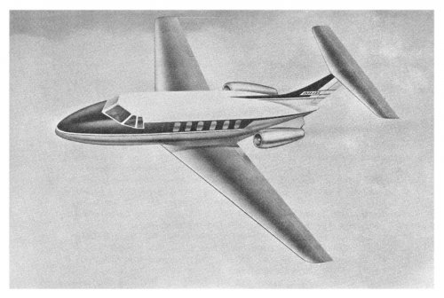

The T-tail was a design fad of the 1960's. The T-tail puts the horizontal stabilizer on top of the fin, instead of in the more usual location at the aft end of the fuselage.
There is one very good reason to move the stabilizer up from its usual location, and that is to avoid the jet blast from a fuselage mounted engine, either in the wing root ( like in the Blackburn Buccaneer, or the HP Victor ) or in nacelles to the side of the aft fuselage ( like in a great many designs following the success of the SE210 Caravelle ). Interestingly, the Caravelle itself had a cruciform tail layout, as had the HP Victor's direct competitor, the Vickers Valiant.
The T-tail is often claimed to be more efficient because the stabilizer will act as an end plate to the fin. This would give the fin a steeper lift-curve slope, allowing a smaller fin with less wetted area.
There is a little hand waving involved, because a conventional stabilizer is also an end plate to the fin, only at the base instead of at the tip. The idea is that the fuselage itself already acts a bit as an end plate, which is not very obvious. The idea that the endplate will contribute a lot to the steeper lift curve slope also contains the hidden assumption that the aspect ratio of a surface is a very important parameter. This rests partly on a common misinterpretation of the Oswald factor, which will be discussed elsewhere.
All in all, the effect of the stabilizer on the fin effectiveness is probably much smaller than expected.
Stabilizers in the wake of a wing have a lower lift curve slope dCLh / dα. This is due to the downwash of the wing reducing the local angle of attack of the tailplane, with increasing main wing lift. T-tail stabilizers are further away from the wing wake, so they may be less prone to this effect and need less area than normal.
However, this may not hold for high AOA, where the wakes are closer. Also, the influence of the wing extends up and down for a distance on the order of half the wing span, so the effect may not be that spectacular anyway.
But still, this may represent a genuine advantage for the T-tail.
The obvious disadvantage of the T-tail is the higher structural weight of the fin and the rear fuselage. The fin, which is normally a lightweight affair, now carries all the vertical forces from the stabilizer.
In yawed flight, the stabilizer also gives an asymmetric bending load, and in accelerated flight ( like in Dutch roll ), the mass of the stabilizer gives extra inertial loads on the fin, and torsional loads on the rear fuselage. All this combines into extra structural weight at the tail of the aircraft, which is where you least need it.
The stabilizer of the first HP Victor separated from the fin in a low pass at speed over Cranfield, killing the crew. We will chalk that particular crash up to ill informed structural design.
A more serious problem with the T-tail is that it is prone to so-called "deep stall". With aft CG and a nose high attitude, the T-tail stabilizer can get into the wake of the stalled main wing and this can create a stable situation, from which there is no recovery. This was found out the hard way on the prototype of the BAC-111 airliner, which did not recover from such a stall, killing another crew.
Perhaps the Victor escaped this fate by a sharp dihedral on the stabilizer, so it was never fully blanked by the wing wake. Similar V-tails were used on other aircraft at the time, like on the Vickers Viscount and the F-27.
A somewhat secondary disadvantage of the T-tail is that it makes the stabilizer harder to inspect. This may not seem like much, but the importance of inspectability must not be underestimated. Many an aircraft has been saved by a preflight walkaround revealing a broken or blocked control surface hinge or lever.
Fokker used a T-tail on their first regional jet airliner, the F-28. With the recent BAC-111 mishap in mind, they had NLR do deep stall research in the wind tunnel. This led to modifications to the placement of the T-tail.
Fokker's still took the precaution of installing vertical lift rockets under the tail of the first prototype to get out of a deep stall if needed. They also had a sliding chute towards a belly hatch behind the cockpit, so the crew could leave the aircraft in a hurry, a lesson learned from the BAC-111 tragedy. The rockets were test fired in an early test flight, and from what I hear the result was scary, but effective. After this, they were never fired in anger.
Years later, there was a brief cooperation between Fokker and Douglas, where Douglas broke off the engagement after having obtained what they needed to know for the T-tail of the DC-9. Later again, Fokker sold the drawings of the F100 T-tail to Grumman, who used it on their Gulfstream business jet. Its tail is identical to that of the Fokker F100.
The structural details of a T-tail are not as easy as they look.
Apparently, the British had more confidence in the T-tail than the French. Unlike the SE-210 and the Dassault Falcon, which had cruciform tails from the start, de Havilland's opted for a T-tail in the DH-125, known today as the HS125. The picture shows an early artist's impression.

DH.125 artist's impression.
The idea was once again, that a short fin with a stabilizer on top would be as effective as a longer fin without it. De Havilland revised their plan even before building the first prototype, adding a bit of fin on top of the stabilizer, which defeats the whole endplate idea.
I suppose the aircraft would not have had enough yaw damping without it. As Roskam used to say before even having looked at an airplane, "the tail's too short". This is true of just about any aircraft in existence. I have yet to hear of an aircraft where the fin or the stabilizer was ever made smaller ( or the CG moved aft, for that matter ). There is always the tendency to reduce wetted area by making the tail surfaces dangerously small, and having to enlarge them later in sometimes awkward ways. The Spitfire stabilizer comes to mind.
The HS125 is also a case in point. It has been flying with the odd fin extension ever since revising the original design decision for a T-tail based on some 1961 wishful thinking.
There can be other reasons to use a T-tail. One of these is that the tail is usually too short ! A stabilizer on top of a swept back fin is a bit further aft than at the base of the fin. The downside is that a swept fin ( like any sweptback surface ) is less effective, and hence needs more area, because sweepback gives a lower lift-curve slope, as Cessna found out when they swept the fins of the C150 and C172 for marketing appeal against the better judgement of their engineers.
Jan Roskam for this reason suggested to Beechcraft the change to a T-tail for their King Air on what amounts to a napkin, and I am not so sure that it was a good idea. But Beech did adopt it, so maybe the trade-off worked for them. Or maybe it was just another marketing ploy.
Another T-tailed aircraft from the same era was the Learjet. Like a strapless evening gown, this airplane owed more to fashion than to practicality, but it looked very nice. The fin was extremely low, but fairly large.
Fin strakes were later added below the tail, colloquially known as the "trainer wheels" like on a kid's bicycle. Such additions are seen in many similar aircraft, including ventral strakes on the HS125. This highlights the fact that fin area is usually insufficient in the original designs. But strakes are also useful because they remain effective in extreme conditions, up to and including stall.
T-tails were used in lightplanes of the period, like the Piper Tomahawk and the Bellanca Aries. The reason quoted was that they were more efficient ( of course they would say that ), but also because they would be more spin resistant because the wake of a stalled stabilizer will not blank the fin. There may be some truth in that, I don't know. These aircraft were not a huge success, probably for unrelated reasons.
There can be specific operational reasons to prefer a T-tail. Trucks will not back into a T-tail stabilizer so easily, and drop parachutes wil not so easily foul them. So T-tails may come in handy for military transport aircraft.
In gliders, a T-tail stabilizer will stay clear of the grass, especially in outlandings. This may be the only reason why all modern gliders have T-tails.
By the way, I want to share with you two rules I learned in a glider club before gliders had T-tails. Don't land in a field with very nice, smooth grass. It's young grain, and it will rip your tail off. Also, don't land in a field with only one cow. It's a bull.
It should be obvious by now that I am not a fan of T-tails. There has to be a very specific reason to use them, and otherwise they are inferior to the normal tail arrangement.
- from DC-8 and VC-10 to B737 and A310.
- wing mounted pro : wing bending alleviation, flutter counterweight.
- wing mounted con : flap gaps, high u/c ( or high wing ).
- tail mounted pro : clean wing.
- tail mounted con : CG problem, loading diagram.